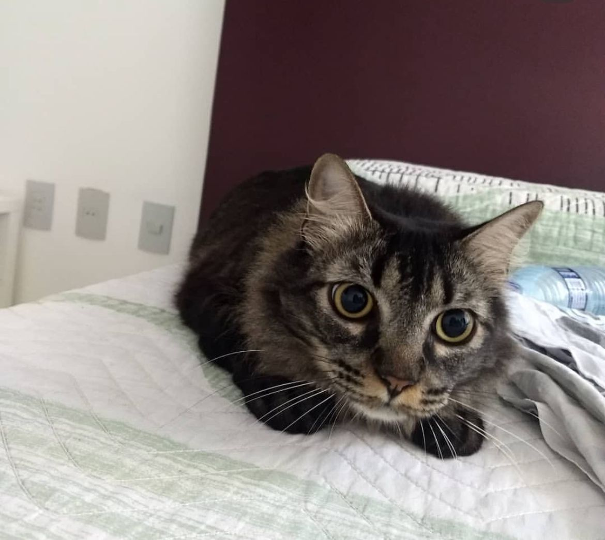
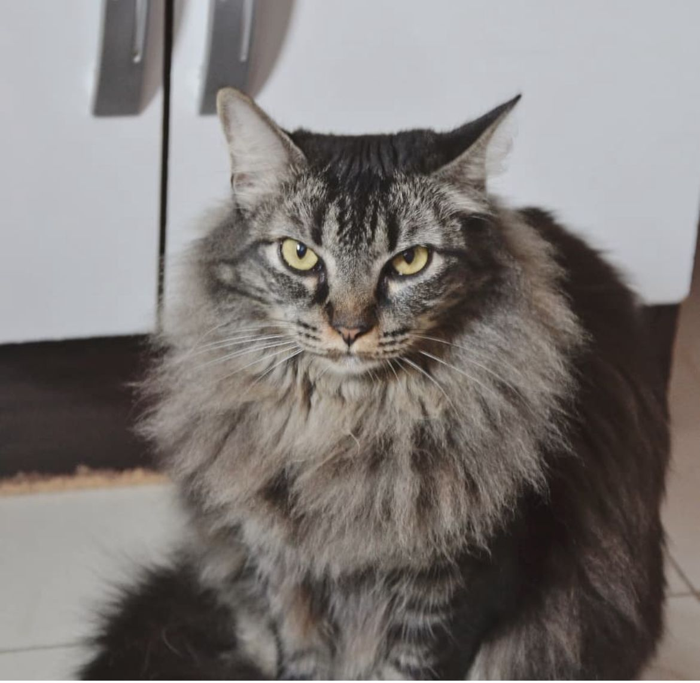

Sobre Aurora
Eu sou a Aurora, e já vou avisando: sou braba mesmo. Se algo não me agrada, faço questão de deixar claro. Também sou gorducha, peluda e completamente preguiçosa — uma combinação perfeita para passar horas deitada no meu cantinho favorito, sem pressa pra nada. Apesar do meu jeitão bravo, tenho meu charme único e um estilo de vida que prioriza conforto e descanso. Pode não parecer, mas gosto da minha família… só demonstro quando quero, do meu jeito, e sempre mantendo minha pose.